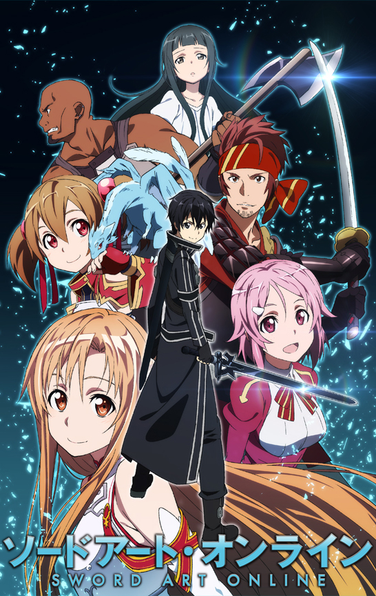
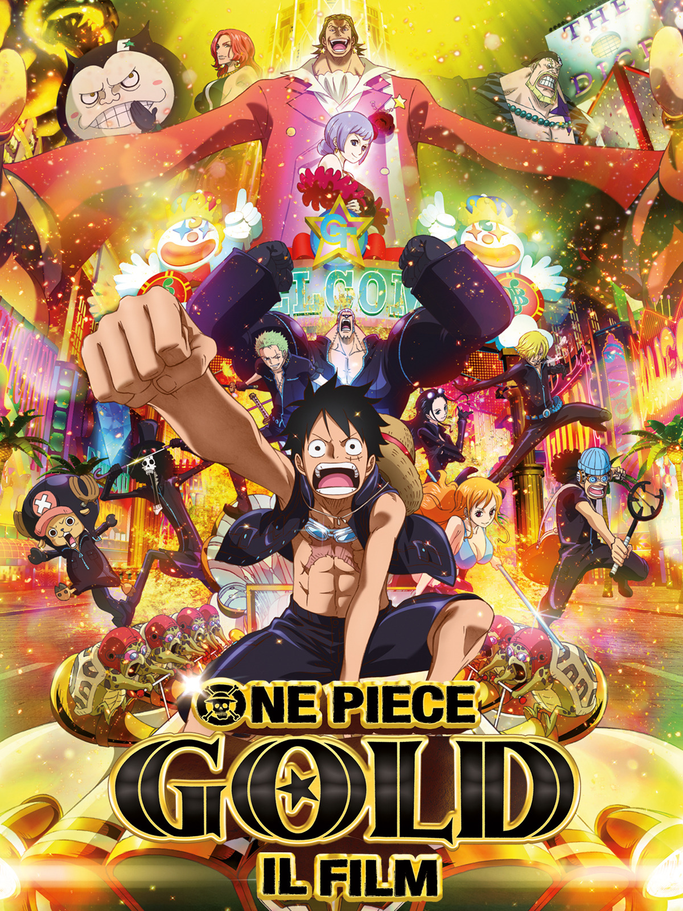
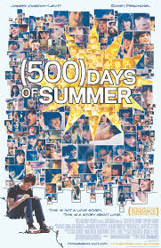
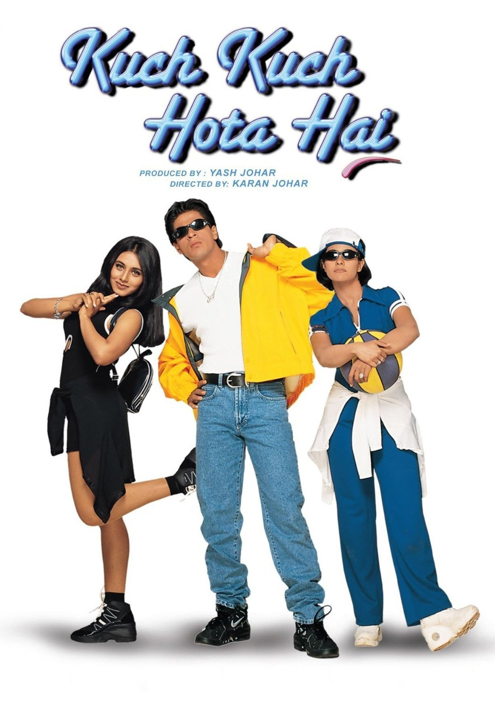
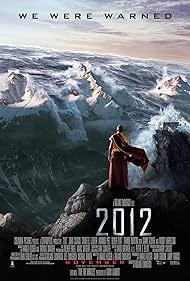

All Movie

1. Sword Art Online
(2012) ★ 9.3
Sword Art Online is an action-fantasy anime about Kirito, a gamer trapped in the VRMMORPG SAO, where dying in-game means dying in real life. To escape, he must clear all floors of Aincrad, facing battles, friendships, and love along the way.

2. One Piece Gold
(2012) ★ 9.3
One Piece Film: Gold" follows the Straw Hat Pirates as they visit Gran Tesoro, a glamorous city of gold ruled by the powerful Gild Tesoro. Behind the luxury lies danger, and the crew must fight to escape his control
.jpg)
3. Dilan 1990
(2018) ★ 9.3
"Dilan is a charming and rebellious high school student in 1990s Bandung. Known for his witty words and unique personality, he falls in love with a girl named Milea. Their love story is filled with romance, youthful drama, and emotional moments that capture the spirit of teenage life.

4. 500 days of summer
(2009) ★ 9.2
"500 Days of Summer" is a romantic drama about Tom, a greeting card writer, who falls in love with Summer, a woman who doesn’t believe in true love. The film explores their relationship in a non-linear timeline, showing the highs and lows of love, heartbreak, and self-discovery

5. kuchi kuchi hota hai
(1998) ★ 7.5
"500 Days of Summer" is a romantic drama about Tom, a greeting card writer, who falls in love with Summer, a woman who doesn’t believe in true love. The film explores their relationship in a non-linear timeline, showing the highs and lows of love, heartbreak, and self-discovery

6. 2012
(2009) ★ 7.1
"2012" is a disaster film about a global cataclysm that threatens to destroy the world. As earthquakes, tsunamis, and volcanic eruptions unfold, a group of people struggles to survive and find safety amidst the chaos. The film showcases intense action, large-scale destruction, and humanity’s fight for survival.

7. Titanic
(1998) ★ 9.2
"Titanic" is a romantic drama film that tells the love story of Jack and Rose, two passengers from different worlds who meet aboard the RMS Titanic. Their romance blossoms, but tragedy strikes when the ship hits an iceberg and sinks.
8. Drawing Closer
(2024) ★ 9.2
"Drawing Closer" is a romantic drama anime film based on the novel by Aoi Morita. It tells the emotional story of Akito Hayasaka, a high school student diagnosed with a terminal illness. Determined to live meaningfully in his final months, he meets Haruna, an aspiring manga artist. As their bond deepens, they find comfort, inspiration, and love in each other—making their time together unforgettable.